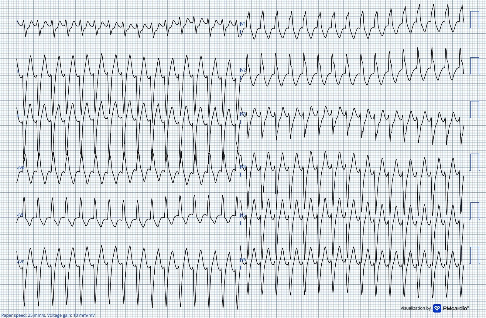
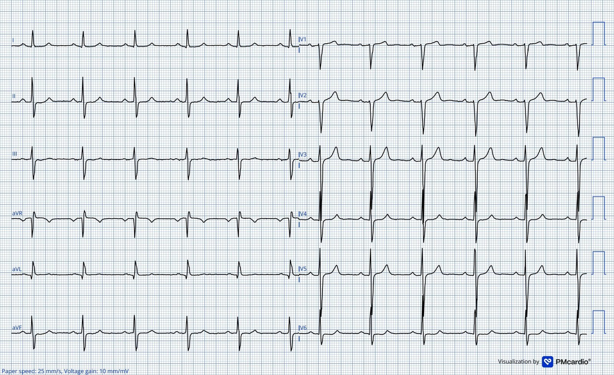
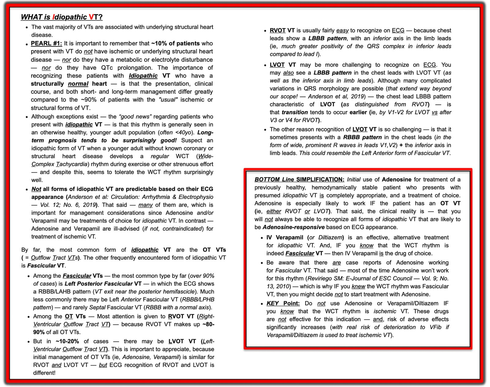
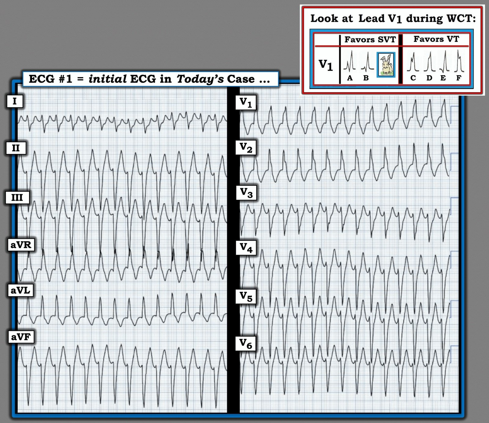

09/03/2026 — Một bệnh nhân 50 tuổi bị hồi hộp đánh trống ngực. Bạn sẽ điều trị thế nào?
Bản dịch tiếng Việt của bài "A 50-year old with palpitations. How will you treat?" – Dr. Smith’s ECG Blog. Giữ nguyên toàn bộ 4 hình ảnh của bản gốc.
Bài viết của Magnus Nossen
Bệnh nhân hôm nay là một nam giới ngoài 50 tuổi, có tiền sử thay van động mạch chủ cơ học do hở van động mạch chủ. Ngoài tăng huyết áp, ông hoàn toàn khỏe mạnh. Bệnh nhân đột ngột hồi hộp đánh trống ngực (palpitations) khi đang xem TV ở nhà. Khi triệu chứng không giảm, ông gọi đội cấp cứu ngoài viện (EMS).
Điện tâm đồ dưới đây được nhân viên cấp cứu ngoài viện ghi tại hiện trường. Ngoài nhịp tim nhanh, các dấu hiệu sinh tồn của bệnh nhân bình thường và ông phủ nhận đau ngực. Bạn nghĩ gì? Bạn sẽ xử trí bệnh nhân này thế nào?
Điện tâm đồ #1 do EMS ghi


Điện tâm đồ cho thấy nhịp nhanh QRS rộng (wide-complex tachycardia) tần số 177 nhịp/phút. Hình thái QRS phù hợp với hình ảnh blốc nhánh phải và blốc phân nhánh trái trước. Thời gian QRS 132ms.
Bệnh nhân được EMS đánh giá là ổn định huyết động. Ông được chuyển tới khoa cấp cứu bằng xe cứu thương.
Bạn sẽ xử trí bệnh nhân này thế nào?
Smith: Dĩ nhiên, dùng điện thường là lựa chọn tốt nhất cho một rối loạn nhịp nhanh. Tuy nhiên, bệnh nhân này ổn định và không bắt buộc phải sốc điện chuyển nhịp cấp cứu. Ta có thể dành chút thời gian để suy nghĩ.
Vậy bạn nghĩ sao?
Magnus: Tôi gửi điện tâm đồ #1 cho Dr Smith và ông lập tức trả lời: “VT phân nhánh sau” (posterior fascicular VT). Đây cũng là nhận định của tôi.
Smith: Bạn không bao giờ có thể chắc chắn tuyệt đối rằng điện tâm đồ này là VT phân nhánh sau. Nếu bạn nhầm, và cho verapamil ở một bệnh nhân bị, chẳng hạn, VT liên quan sẹo, hậu quả có thể là thảm họa. Vậy làm sao bạn có thể chắc chắn rằng verapamil là an toàn? Hãy làm siêu âm tại giường. Vì VT phân nhánh sau (PFVT) không do cơ tim bệnh lý, phân suất tống máu (EF) hẳn phải tương đối bình thường. Và verapamil an toàn khi EF bình thường. Vì vậy tôi sẽ làm siêu âm tim tại giường và, nếu EF tốt, cho verapamil.
Điều gì đã thực sự xảy ra?
Tại khoa cấp cứu (ED), rối loạn nhịp tự chấm dứt mà không cần can thiệp gì. Siêu âm tim cho thấy van động mạch chủ cơ học hoạt động bình thường và không có bằng chứng rối loạn vận động thành. Phân suất tống máu bình thường và INR nằm trong khoảng điều trị.
Điện tâm đồ #2 ghi tại khoa cấp cứu


Điện tâm đồ ghi sau khi rối loạn nhịp chấm dứt. Bố trí chuyển đạo chuẩn. Điện tâm đồ này cho thấy nhịp xoang 67/phút. Khoảng PR bình thường, 182ms; phức bộ QRS hẹp, 105ms. Không có dấu hiệu thiếu máu cục bộ. Điện tâm đồ này không thay đổi so với trước đây.
Từ đây về sau bạn sẽ xử trí bệnh nhân này thế nào?
Ca bệnh tiếp diễn:
Bệnh nhân được nhập viện để thăm dò VT. Chụp động mạch vành được thực hiện vào ngày hôm sau do troponin tăng nhẹ. Bệnh nhân không có tiền sử đau ngực và phủ nhận mọi triệu chứng gợi ý đau thắt ngực. Phim chụp mạch cho thấy các động mạch vành bình thường, và mức tăng troponin nhẹ được quy cho chính cơn nhịp nhanh, phù hợp với cơ chế tổn thương cơ tim típ II.
Các bác sĩ điều trị đã không nhận ra hình ảnh điện tâm đồ này phù hợp với VT phân nhánh (fascicular VT). Điều trị nội khoa bằng thuốc chẹn beta được bắt đầu. Trong vài tháng sau đó, bệnh nhân nhiều lần đến khoa cấp cứu và khoa tim mạch vì các cơn hồi hộp đánh trống ngực. Ông tiếp tục có các cơn nhịp nhanh thất tái phát, và nhiều thuốc chống loạn nhịp, gồm metoprolol, amiodarone và sotalol, lần lượt được thử mà không hiệu quả. Sau khi điều trị nội khoa thất bại, bệnh nhân được cấy máy khử rung tim cấy được (ICD).
Cấy ICD dĩ nhiên sẽ không giải quyết được vấn đề. ICD chỉ có thể giúp cắt cơn rối loạn nhịp bằng tạo nhịp chống nhịp nhanh hoặc sốc điện một chiều (DC). Việc tiếp tục kê amiodarone ở bệnh nhân của chúng tôi đã làm chậm tần số VT, dẫn đến VT dai dẳng ở tần số thấp hơn ngưỡng phát hiện của ICD.
Cuối cùng, sau nhiều tháng cố gắng điều trị rối loạn nhịp bằng các thuốc chống loạn nhịp thông thường (không thành công), bệnh nhân được chuyển đi triệt đốt VT.
Việc này lẽ ra phải được làm ngay sau lần nhập viện đầu tiên!
Không có gì ngạc nhiên, một VT phân nhánh sau đã được xác định và triệt đốt. Nếu hình ảnh VT phân nhánh được nhận ra ngay trong lần nhập viện đầu tiên, nhiều khả năng bệnh nhân này đã tránh được nhiều tháng VT tái phát, việc phơi nhiễm amiodarone không cần thiết và việc cấy ICD. VT phân nhánh chưa bao giờ được nhắc đến trong hồ sơ bệnh án trước khi làm thăm dò điện sinh lý và thủ thuật triệt đốt, và verapamil cũng vậy.
VT phân nhánh sau là dạng VT phân nhánh thường gặp nhất. Do khởi phát từ phân nhánh trái sau, phức bộ QRS có hình ảnh RBBB và LAFB. Nó có đặc điểm là phức bộ QRS tương đối hẹp (<140ms) với khoảng RS ngắn (60-80ms).
VT phân nhánh sau là một trong các phân típ VT vô căn. Nó thường đáp ứng kém với các thuốc chống loạn nhịp thông thường dùng cho VT liên quan sẹo (thuốc chẹn beta và amiodarone). Tuy nhiên, loại rối loạn nhịp này hầu như luôn đáp ứng tốt với verapamil. Verapamil rất tốt cả để cắt cơn rối loạn nhịp đang diễn ra lẫn để phòng tái phát.
VT vô căn kinh điển được mô tả ở bệnh nhân có tim bình thường về mặt cấu trúc. Nói một cách chặt chẽ, tiền sử thay van động mạch chủ đặt bệnh nhân này ra ngoài nhóm đó. Tuy nhiên, trong ca này, chụp động mạch vành đã loại trừ bệnh động mạch vành và siêu âm tim không cho thấy bệnh cơ tim hay sẹo cơ tim. Chức năng hai thất được bảo tồn, và van động mạch chủ cơ học hoạt động tốt. Không có lý do gì để nghĩ rằng rối loạn nhịp này có liên quan đến việc thay van động mạch chủ trước đó. Nếu tôi là người chịu trách nhiệm chăm sóc bệnh nhân, tôi đã bắt đầu verapamil và chuyển bệnh nhân đi thăm dò điện sinh lý với mục tiêu triệt đốt qua ống thông
Smith: Ca này minh họa vì sao dùng điện thường KHÔNG phải là câu trả lời, nhất là với VT phân nhánh sau. Rối loạn nhịp này thường tái phát. Như Magnus viết, nếu bệnh nhân được chẩn đoán đúng ngay từ đầu, ông đã có thể được dùng verapamil và tránh được tất cả các biến chứng này.
Đây là một ca khác minh họa vấn đề này: Incessant Regular Wide Complex Tachycardia
Đọc bài này: Idiopathic Ventricular Tachycardias for the EM Physician
Những điểm cần học:
- VT phân nhánh thường đáp ứng kém với các thuốc chống loạn nhịp tiêu chuẩn, nhưng đặc trưng là nhạy với verapamil tĩnh mạch, thuốc này thường cắt cơn nhịp nhanh một cách nhanh chóng.
- Nhịp nhanh thất vô căn thường xảy ra ở những người vốn khỏe mạnh.
- Ca này nhấn mạnh rằng dù có tiền sử bệnh tim, đôi khi vẫn hợp lý khi cân nhắc VT vô căn là nguyên nhân của nhịp nhanh QRS rộng (WCT).
= = =
======================================
BÌNH LUẬN CỦA TÔI, bởi KEN GRAUER, MD (9/3/2026):
Ca hôm nay của Dr. Nossen là một lời nhắc quan trọng về những cân nhắc MẤU CHỐT khi đánh giá bệnh nhân đến khám với WCT đều (nhịp nhanh QRS rộng) khi không có dấu hiệu rõ ràng của sóng P xoang.
- Tôi tập trung bình luận vào một số cân nhắc bổ sung cho những điều đã được nêu trong phần bàn luận của Dr. Nossen.
= = =
VT vô căn:
Như chúng tôi vẫn định kỳ ôn lại trong Dr. Smith’s ECG Blog — VT vô căn (idiopathic VT) là một dạng đặc biệt của nhịp nhanh thất, trong đó bệnh nhân không có bệnh tim cấu trúc nền (Xem Bình luận của tôi — ở cuối trang trong bài đăng ngày 5 tháng Bảy năm 2025).
- Tùy theo quần thể được khảo sát — các dạng VT vô căn chiếm ~10% tổng số VT gặp trong thực hành. Tuy nhiên, ở những người trưởng thành trẻ tuổi trước đó khỏe mạnh — tỷ lệ các nhịp VT hóa ra là VT vô căn sẽ lớn hơn nhiều.
- Ngược lại — tỷ lệ hiện mắc VT vô căn thấp hơn nhiều ở người lớn tuổi có bệnh tim nền, ở họ tuyệt đại đa số các nhịp VT có căn nguyên thiếu máu cục bộ hoặc cấu trúc.
- Hiểu được những khác biệt về tỷ lệ VT này sẽ ảnh hưởng đến khả năng tương đối mà một nhịp WCT đều hóa ra là nhịp trên thất hay một dạng VT nào đó. Xác suất thống kê để một nhịp WCT đều ở người lớn tuổi có bệnh tim hóa ra là VT là ít nhất 90% (với phần lớn các VT này có căn nguyên thiếu máu cục bộ hoặc cấu trúc).
- Ngược lại, trong một quần thể người trưởng thành trẻ tuổi trước đó khỏe mạnh đến khám vì WCT đều — VT vô căn (chứ không phải SVT kèm dẫn truyền lệch hướng) sẽ được phát hiện thường xuyên hơn nhiều so với nhận thức chung.
- Như tôi tóm tắt bên dưới ở Hình 1 (và trong Audio Pearl dài 8 phút của tôi ở Phần bổ sung bên dưới) — ý nghĩa lâm sàng của việc phân biệt các dạng VT vô căn (tức là, ở bệnh nhân không có bệnh tim nền) — với các dạng VT thiếu máu cục bộ và cấu trúc (chiếm tuyệt đại đa số VT ở bệnh nhân lớn tuổi có bệnh tim) — là việc đánh giá và điều trị rất khác nhau, nhìn chung với kết cục dài hạn và đáp ứng điều trị tốt hơn nhiều ở các VT vô căn.
= = =
Điểm MẤU CHỐT “Cần nhớ”: Ở cả quần thể người trưởng thành trẻ tuổi lẫn lớn tuổi — VT xảy ra thường gặp hơn so với nhận thức của nhiều bác sĩ lâm sàng. Do đó — chúng ta cần luôn luôn cân nhắc khả năng VT ở bất kỳ bệnh nhân nào đến khám với nhịp WCT đều mà không có dấu hiệu rõ ràng của sóng P xoang.
- Điểm MẤU CHỐT ở trên vẫn đúng bất kể bệnh nhân có ổn định huyết động hay không! Mặc dù bệnh nhân bị VT bền bỉ có khả năng mất bù cao hơn nhiều so với những người vẫn ở trong nhịp SVT kéo dài (đặc biệt khi bệnh nhân lớn tuổi và có bệnh tim nền) — nhận định chung này không phải lúc nào cũng đúng. Một số bệnh nhân bị VT bền bỉ vẫn ổn định huyết động trong nhiều giờ — hoặc thậm chí lâu hơn (đã có ghi nhận những trường hợp lẻ tẻ VT bền bỉ kéo dài nhiều ngày — trong khi những người chăm sóc quanh giường bệnh không chịu tin rằng điều này có thể xảy ra).
- Đặc biệt với các dạng VT vô căn (trong đó bệnh nhân không có bệnh tim nền) — VT bền bỉ có thể kéo dài trong những khoảng thời gian dài đến đáng ngạc nhiên. Vì vậy — không thể dùng sự ổn định huyết động để loại trừ VT!
= = =
Làm thế nào để phân biệt VT vô căn với SVT?
Dẫn truyền lệch hướng thường biểu hiện nhất dưới dạng QRS giãn rộng liên quan tần số, với một hình thái QRS giống một dạng rối loạn dẫn truyền đã biết nào đó (tức là, RBBB, LBBB, LAHB, LPHB, hoặc RBBB kèm một blốc phân nhánh). Đó là vì thời kỳ trơ của các phân nhánh dẫn truyền khác nhau không giống nhau. Ở phần lớn bệnh nhân — thời kỳ trơ của nhánh phải có xu hướng dài nhất, đó là lý do dẫn truyền RBBB là dạng dẫn truyền lệch hướng liên quan tần số thường gặp nhất. Nhưng bất kỳ kiểu dẫn truyền nào cũng có thể xảy ra khi dẫn truyền lệch hướng liên quan tần số.
- Trong những trường hợp hiếm — “một nguyên nhân khác” (tức là, tăng kali máu, ngộ độc thuốc chẹn kênh natri — hoặc ngộ độc khác) có thể gây ra một nhịp WCT đều , đặc biệt nếu QRS cực kỳ rộng (hơn 0,14 giây). Dù vậy — ở một người trưởng thành trẻ tuổi trước đó khỏe mạnh (giả định không có rối loạn nhịp liên quan WPW) — cân nhắc chính là phân biệt giữa VT với SVT kèm BBB có sẵn từ trước hoặc dẫn truyền lệch hướng liên quan tần số.
- Hình thái QRS có thể cho phép dự đoán căn nguyên WCT chính xác hơn — đặc biệt nếu có các đặc điểm điện tâm đồ dự báo VT hoặc SVT. Dù vậy, ngay cả trong những trường hợp hình thái QRS có tính gợi ý — hiếm khi đạt được độ chắc chắn 100% trước khi chúng ta cần bắt đầu điều trị.
- Nhiều khi (phần lớn các trường hợp) — chúng ta sẽ cần bắt đầu điều trị trước khi chắc chắn về chẩn đoán. Hãy nhớ rằng nếu tại bất kỳ thời điểm nào trong quá trình này, bệnh nhân có dấu hiệu trở nên mất ổn định huyết động — thì sốc điện chuyển nhịp đồng bộ được chỉ định ngay lập tức. Dù vậy, khi chưa chắc chắn về chẩn đoán — điều trị theo kinh nghiệm dựa trên chẩn đoán phỏng đoán tốt nhất của chúng ta là hợp lý.
Như được bàn luận bên dưới ở Hình 1 — VT phân nhánh là một trong những dạng VT vô căn thường gặp nhất.
- Do khởi phát gần phân nhánh trái trước hoặc trái sau — hình thái QRS trong VT phân nhánh giống dẫn truyền RBBB/LAHB hoặc RBBB/LPHB.
- Dù đã nói như trên — manh mối mà tôi ưa thích cho thấy một nhịp WCT có thể hóa ra là VT phân nhánh — là có một số đặc điểm điện tâm đồ không điển hình của dẫn truyền RBBB hoặc blốc phân nhánh!
= = =
Hình 1: Ôn tập các đặc điểm MẤU CHỐT về VT vô căn .


= = =
Quay lại với CA BỆNH hôm nay:
Để cho rõ, ở Hình 2 — tôi đã sao lại điện tâm đồ ban đầu của hôm nay. Vào đó — tôi đã thêm một ô chèn ở góc trên bên phải hình, về các manh mối hình thái QRS giúp xác định căn nguyên WCT.
- Như Dr. Nossen đã nêu — điện tâm đồ ở Hình 2 cho thấy một WCT đều tần số ~175/phút, không có dấu hiệu rõ ràng của hoạt động nhĩ. Hình thái QRS trong bản ghi này bề ngoài giống dẫn truyền RBBB/LAHB.
= = =
CÂU HỎI: Vậy tại sao cả Dr. Smith và Dr. Nossen đều lập tức nhận ra điện tâm đồ hôm nay rất gợi ý VT vô căn?
= = =
Hình 2: Điện tâm đồ ban đầu của hôm nay — kèm ô chèn về hình thái QRS ở chuyển đạo V1 nghiêng về VT hơn SVT.


= = =
VT vô căn: Tìm các MANH MỐI từ hình thái QRS . . .
Dù có ngoại lệ — người ta sẽ dự đoán dẫn truyền lệch hướng liên quan tần số biểu hiện một hình thái QRS điển hình hơn của một dạng blốc dẫn truyền nào đó ở một người trẻ tuổi vốn khỏe mạnh. Ngược lại, ở người lớn tuổi có bệnh tim nền — hình thái QRS kém điển hình hơn trở nên có khả năng xảy ra, ngay cả khi nhịp là nhịp trên thất (tức là, “sẹo” do bệnh tim thiếu máu cục bộ và/hoặc bệnh cơ tim có nhiều khả năng làm thay đổi hình thái QRS hơn).
= = =
Những lý do khiến Dr. Smith và Dr. Nossen lập tức nhận ra VT vô căn trên điện tâm đồ ban đầu hôm nay gồm:
- Với dẫn truyền RBBB điển hình — có một phức bộ rsR’ ba pha rõ ràng ở chuyển đạo bên phải V1 (với tai thỏ bên phải cao hơn — và sóng S đi xuống dưới đường nền — phù hợp với A hoặc B trong ô chèn ở Hình 2).
- Thay vào đó — hình thái QRS ở chuyển đạo V1 không điển hình hơn mức tôi thường dự đoán đối với một nhịp trên thất (tức là, ở bệnh nhân không có bệnh mạch vành nền hay bệnh cơ tim). Đó là vì thay vì QRS ba pha ở chuyển đạo V1 — ta thấy một sóng R đơn pha dương hoàn toàn ở chuyển đạo V1 (giống nhất với kiểu D trong ô chèn ở Hình 2).
- ĐIỂM THEN CHỐT (PEARL): Về mặt thực hành — hình thái QRS duy nhất có độ đặc hiệu cao cho SVT là sự hiện diện của hình thái mô tả ở trên, được thể hiện ở A hoặc B trong Hình 2. Mặc dù các kiểu khác trong ô chèn không nhất thiết chẩn đoán VT — bất kỳ hình thái QRS nào khác (tức là, C,D,E,F ở Hình 2) đều sẽ làm tăng khả năng là VT.
Đặc điểm đặc trưng còn lại của dẫn truyền RBBB — là sự hiện diện của sóng S tận rộng ở các chuyển đạo bên trái I và V6. Mặc dù điều này có mặt ở Hình 2 — có những dấu hiệu tinh tế khác trong bản ghi hôm nay kém điển hình cho dẫn truyền trên thất:
- Vùng chuyển tiếp ở các chuyển đạo ngực sang phức bộ QRS chủ yếu âm xảy ra sớm hơn nhiều so với tôi dự đoán ở dẫn truyền RBBB (tức là, Ngay từ chuyển đạo V3 — QRS đã trở nên chủ yếu âm — và vẫn chủ yếu âm ở tất cả các chuyển đạo ngực còn lại!). Thông thường với dẫn truyền RBBB — sẽ có nhiều hoạt động dương hơn những gì ta thấy ở đây sau chuyển đạo V3 (và rất hiếm khi thấy không có gì hơn ngoài sóng r khởi đầu nhỏ xíu như ta thấy ở đây trong chuyển đạo V6).
- Thông thường với dẫn truyền LAHB — có phần dao động dương khởi đầu ở các chuyển đạo dưới nhiều hơn những gì ta thấy ở Hình 2 (cho thấy các sóng r khởi đầu nhỏ hơn 2 mm ở các chuyển đạo II,III,aVF).
- Thông thường với dẫn truyền LAHB — có sóng R cao hơn ở chuyển đạo I — thay vì phức bộ chủ yếu âm như ta thấy ở Hình 2 (tức là, Trục mặt phẳng trán không xác định mà ta thấy ở Hình 2 thường gặp trong VT phân nhánh — nhưng hiếm gặp với các nhịp trên thất).
ĐIỀU CỐT LÕI: Vì tất cả các đặc điểm không điển hình nêu trên đối với dẫn truyền RBBB/LAHB — tôi cũng đã lập tức nghi ngờ VT phân nhánh cho nhịp ban đầu hôm nay.
- Như Dr. Nossen đã nêu — Verapamil tĩnh mạch (hoặc Diltiazem) rất hiệu quả trong điều trị VT phân nhánh — và lẽ ra phải là thuốc được lựa chọn để điều trị nhịp ban đầu hôm nay.
- “Tin tốt” — là Verapamil tĩnh mạch cũng rất hiệu quả trong điều trị các nhịp SVT vào lại (AVNRT, AVRT) — vì vậy thuốc này có lẽ đã có tác dụng bất kể căn nguyên của nhịp WCT hôm nay là gì.
- Điểm MẤU CHỐT: Lý do chính cần thận trọng, tránh dùng Verapamil hoặc Diltiazem tĩnh mạch để điều trị nhịp WCT đều — là nếu nhịp hóa ra là một dạng VT do thiếu máu cục bộ — thì tác dụng giảm co bóp cơ tim và giãn mạch của các thuốc này có thể khiến bệnh nhân mất bù. Do đó — không nên cho Verapamil tĩnh mạch (hoặc Diltiazem) nếu nhiều khả năng đó là một dạng VT do thiếu máu cục bộ hoặc do cấu trúc (tức là, ở bệnh nhân lớn tuổi có bệnh tim nền).
- Đối với ca hôm nay — QRS không quá rộng và hình thái QRS rất điển hình phù hợp với VT phân nhánh ở bệnh nhân này, người không được cho là có bệnh mạch vành nền, lẽ ra đã đủ cơ sở để thử dùng Verapamil tĩnh mạch.
= = =
= = =
PHẦN BỔ SUNG:
- LƯU Ý #1: Dưới đây là ECG Audio PEARL dài 8 phút của tôi về VT vô căn.
- = = =
- LƯU Ý #2: Dưới đây là ECG Audio PEARL dài 12 phút của tôi về việc phân biệt VT với SVT khi gặp một nhịp WCT đều. (Cần nhớ — Xác suất thống kê để một nhịp WCT đều hóa ra là một dạng VT vô căn sẽ cao hơn nhận thức của nhiều bác sĩ lâm sàng nếu bệnh nhân là người trưởng thành trẻ tuổi trước đó khỏe mạnh).
- = = =
- Để xem một ca WCT khác liên quan đến ca hôm nay — BẤM VÀO ĐÂY —
- = = =
- LƯU Ý: Tôi đã bổ sung một số Video ECG ngắn chọn lọc về đọc rối loạn nhịp — có thể tìm thấy ở Menu TRÊN CÙNG của bất kỳ trang nào trong Dr. Smith’s ECG Blog — BẤM VÀO ĐÂY — nếu bạn quan tâm — 🙂
= = =
= = =